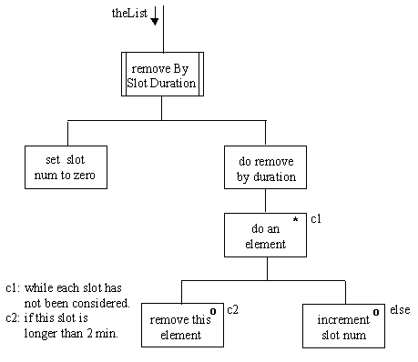

Waypoint 4 sample
practical assessment task
(version A)
You should be able to complete this task in less than one hour.
You must have a working version
of RadioShow
(fourth iteration) available before you begin.
Add another option to the RadioShow artifact which removes all slots which have a duration of more than 2 min.
A design outline is given below.

HINTS: The RadioSlot getSlotDuration() method will return the duration as a PlayTime instance. The PlayTime getMinutes() method will return an int representing the number of minutes.
Return to Waypoint 4 Schedule Page